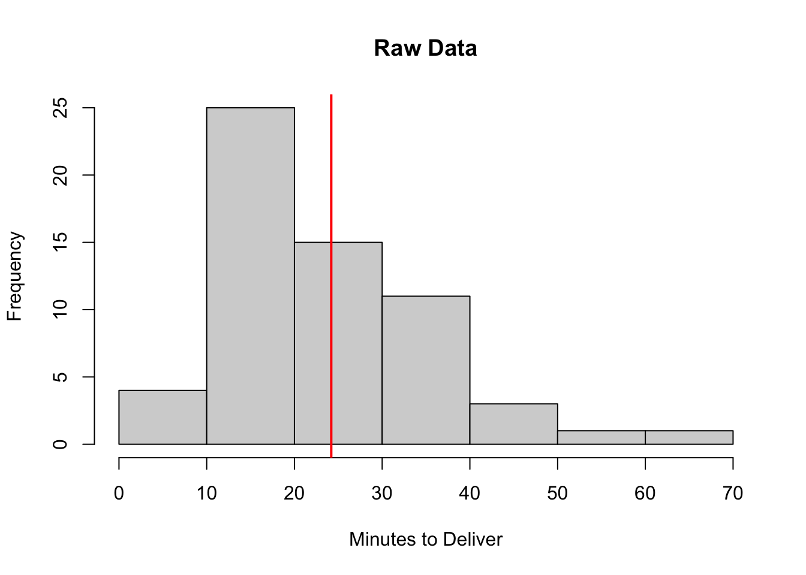

Week 5: October 2 2025
Today’s Topic: Bootstraping
Bootstrapping is a resampling technique that allows us to test the robustness of a point estimate (such as a mean or a regression slope). The idea is that the dataset is “resampled”, usually around 5000 times with replacement. In this way, we treat the dataset as a population and repeatedly sample from it. The bootstrapped estimates. can then be treated as their own distribution. Bootstraping can either reinforce or refute the original point estimate.
Example #1: Bootstrapping a Mean
To demonstrate, I will simulate skewed data, look at the mean, then see the bootstrap distribution. Suppose that these data represent time to deliver pizzas from a pizza shop.
This code generates a dataframe
xthat is right-skewed.Outliers can have a heavy influence on descriptive statistics such as the mean value.
Today I will generate charts using Base R instead of ggplot. Base R charts are typically less visually pleasing than ggplots, and they are not as customizeable. However, base R charts are quick to produce and are useful to know about. Especially if you are exploring a dataset privately (i.e., not preparing a report for a stakeholder), it is sometimes preferable to be able to quickly create different visualizations.

Figure 1. The distribution of delivery timees is right-skewed. Most deliveries take under 40 minutes, but a few take longer – up to 70 minutes – to complete. The vertical red line represents the mean delivery time of ~ 24 minutes.
We can also ask R to calculate and print out the exact mean value:
## [1] 24.19566- The average delivery takes 24.19 minutes to complete.
Especially because the distribution of delivery times is right-skewed, we cannot comment on how robust the mean estimate is. Is it a good representation of the average delivery time? Or are the outlying times creating a skewed estimate? We can use bootstrapping to calculate a more robust estimate:
This code resamples the data
x2000 times with replacement.Each time the dataset is resampled, the mean delivery time is calculated.
The bootstrapping process generates 2000 mean estimates based on the 2000 samples that were taken.
We can then plot a histogram of the bootstrapped means to understand the shape of the bootstrapped distribution of estimates:
hist(boot_means, main = "Bootstrap Distribution of the Mean Delivery Time",
xlab = "Bootstrapped Means")
abline(v = mean(x), col = "red", lwd = 2)
Figure 2. Estimates of mean delivery time taken from 2000 samples. The red vertical line represents the mean delivery time from the original dataset.
In this case, the distribution of bootstrapped means is centered around the original point estimate.
Therefore, the bootstrapping procedure increases our confidence in the original point estimate.
Example #2: Bootstrapping a Regression Slope
To demonstrate bootstrapping a regression coefficient, I will simulate a new set of fictitious data. The code to generate the data is set up to create a scenario where there is a positive linear relationship between x and y, but that linear relationship depends on a few outlying datapoints. The goal here is to showcase a scenario where bootstrapping does not increase our confidence in the originial point estimate.
# For reproducibility
set.seed(123)
# Generate two vectors: x and y to model
x <- c(rexp(40, rate = 0.1), 50, 60) #
y <- 5 + 0.5*x + rnorm(length(x), 0, sd = 5 + 0.2*x)
# Fit regression
fit <- lm(y ~ x)
# Print regression results
summary(fit)##
## Call:
## lm(formula = y ~ x)
##
## Residuals:
## Min 1Q Median 3Q Max
## -20.4208 -3.9460 -0.5488 3.8842 20.9524
##
## Coefficients:
## Estimate Std. Error t value Pr(>|t|)
## (Intercept) 5.15729 1.66402 3.099 0.00354 **
## x 0.49185 0.09637 5.104 0.00000851 ***
## ---
## Signif. codes: 0 '***' 0.001 '**' 0.01 '*' 0.05 '.' 0.1 ' ' 1
##
## Residual standard error: 7.882 on 40 degrees of freedom
## Multiple R-squared: 0.3944, Adjusted R-squared: 0.3792
## F-statistic: 26.05 on 1 and 40 DF, p-value: 0.000008507There is a significant relationship between
xandyin this example (p < 0.001).A 1-unit increase in
xis associated with a 0.49-unit increase iny.Variance in
xaccounts for 39% of variance iny(\(R^2\) = 0.3944)
As I’ve mentioned previously, a picture is always worth 1000 words in analytics, so let’s have a look at the scatterplot:
# Make a Scatterplot
plot(x, y, main = "Skewed data with leverage points")
# Add the Regression line
abline(fit, col = "red", lwd = 2)
Figure 3. Linear relationship between x and y. Note that there are a few outlying datapoints towards the right of the x-axis that seem to be influencing the upward slope of the regression line.
## 2.5 % 97.5 %
## 0.2970743 0.6866348- The 95% confidence interval around the slope estimate is [0.30, 0.69]. Based on these data, we would expect the slope of the line of best fit to fall between 0.3 and 0.69 95% of the time, if the sampling procedure were to be repeated.
We might want to bootstrap the estimate to get a good idea of how robust the point estimate for the slope is.
boot_slopes <- replicate(2000, coef(lm(y[sample(length(x), replace=TRUE)] ~ x[sample(length(x), replace=TRUE)]))[2])This code resamples the dataset 2000 times (with replacement) and computes the coefficient of the line of best fit between
xandyeach time.The result is a dataframe
boot_slopeswith 2000 estimates of the slope of the relationship betweenxandy.
We can then visualize the distribution of bootstrapped slopes to see how closely they map on to the original estimate of the slope that we computed above.
hist(boot_slopes, breaks = 30, main = "Bootstrap slopes", xlab = "Slope")
abline(v = coef(fit)[2], col = "red", lwd = 2)
Figure 4. Distribution of bootstrapped slopes taken from 2000 samples. The red vertical line represents the original slope that we computed from the data above (\(\beta\) = 0.49).
The bootstrapped distribution of slopes is centered around 0.
A slope of zero in a regression model indicates a flat horizontal line of best fit (i.e., no linear relationship between
xandy).Here, the bootstrapping procedure has indicated that our original point estimate is not robust.
We could also use the quantile command from base R to find the boundaries of where 95% of the bootstrapped slopes fall.
## 2.5% 97.5%
## -0.2309303 0.303800095% of the bootstrapped slopes fall between -0.23 and 0.30.
This further emphasizes that the relationship between
xandyis not robust in our dataset.